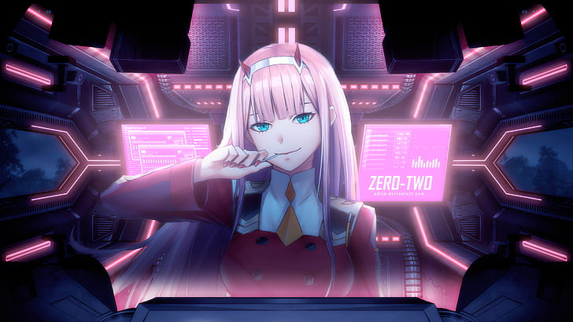

"Web development is the art of creating websites on the internet. It involves designing, coding, and maintaining websites to make them look great and work smoothly. As a web developer, I craft digital experiences that are user-friendly and visually appealing. I use languages like HTML, CSS, and JavaScript to bring websites to life, ensuring they're responsive on all devices. With a passion for creating interactive and engaging web solutions, I'm committed to building a strong online presence for businesses and individuals. Explore my portfolio to see how I transform ideas into functional and captivating websites that leave a lasting impression."
A graphic designer is like a visual storyteller. They use colors, images, and text to create eye-catching designs that convey messages. From logos and posters to websites and social media graphics, a graphic designer adds the magic touch that makes things look amazing. They have a keen eye for detail and a creative mind that turns ideas into stunning visuals. With their skills, they make brands stand out and help businesses communicate effectively. Whether it's print or digital, a graphic designer crafts visuals that leave a lasting impression. I am passionate about creating memorable designs that speak volumes.
A great UI/UX design for a portfolio website is like a welcoming smile that invites visitors in. It's all about making your site easy to navigate and visually appealing. Use clear, intuitive menus, eye-catching graphics, and organized content to guide users. Ensure it's responsive, so it looks good on both desktop and mobile devices. Thoughtful color schemes and fonts help convey your personality and style. Above all, focus on user-friendliness – make it a breeze for people to explore your work and get in touch. A well-designed portfolio site showcases your talents and leaves a lasting, positive impression.
Creating a captivating poster design for your portfolio website is essential. It's like a virtual business card, showcasing your skills and style. Use striking visuals, vibrant colors, and clean typography to grab attention. Highlight your best work and provide contact information for potential clients or employers. Make it user-friendly and mobile-responsive to reach a wider audience. Remember, a well-designed poster on your portfolio website can leave a lasting impression, making it a powerful tool to promote your talents and advance your career. So, put your creativity to work and design a poster that speaks volumes about your abilities.
